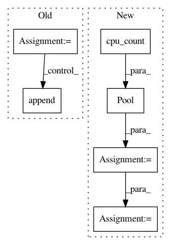

03ef391a07e08eefce7299f3a934b49505c5be16,examples/pdbbind/pdbbind_datasets.py,,featurize_pdbbind,#Any#Any#Any#,70
Before Change
time1 = time.time()
for ind, pdb_code in enumerate(ids):
print("Processing complex %d, %s" % (ind, str(pdb_code)))
pdb_subdir = os.path.join(pdbbind_dir, pdb_code)
if not os.path.exists(pdb_subdir):
print("%s is missing!" % pdb_subdir)
missing_pdbs.append(pdb_subdir)
continue
computed_feature = compute_pdbbind_features(featurizer, pdb_subdir,
pdb_code)
if feature_len is None:
feature_len = len(computed_feature)
if len(computed_feature) != feature_len:
print("Featurization failed for %s!" % pdb_code)
continue
y_inds.append(ind)
features.append(computed_feature)
time2 = time.time()
print("TIMING: PDBBind Featurization took %0.3f s" % (time2 - time1))
print("missing_pdbs")
After Change
features = []
y_inds = []
time1 = time.time()
p = Pool(multiprocessing.cpu_count())
args = []
for ind, pdb_code in enumerate(ids):
args.append((ind, pdb_code, pdbbind_dir, featurizer))
results = p.map(compute_single_pdbbind_feature, args)
feature_len = None
for result in results:
if result is None:
continue
if feature_len is None:
feature_len = len(result[1])
if len(result[1]) != feature_len:
continue
y_inds.append(result[0])
features.append(result[1])
time2 = time.time()
print("TIMING: PDBBind Featurization took %0.3f s" % (time2 - time1))
y = y[y_inds]
X = np.vstack(features)
In pattern: SUPERPATTERN
Frequency: 3
Non-data size: 6
Instances
Project Name: deepchem/deepchem
Commit Name: 03ef391a07e08eefce7299f3a934b49505c5be16
Time: 2017-03-06
Author: lilleswing@gmail.com
File Name: examples/pdbbind/pdbbind_datasets.py
Class Name:
Method Name: featurize_pdbbind
Project Name: rusty1s/pytorch_geometric
Commit Name: 17e56b9100275068c7ad0e74c0bf247866da846f
Time: 2020-05-31
Author: j-magnusson@t-online.de
File Name: torch_geometric/utils/geodesic.py
Class Name:
Method Name: geodesic_distance
Project Name: rusty1s/pytorch_geometric
Commit Name: cce4382f73d0976fb94b003949acd668377a0869
Time: 2020-04-03
Author: j-magnusson@t-online.de
File Name: torch_geometric/utils/geodesic.py
Class Name:
Method Name: geodesic_distance